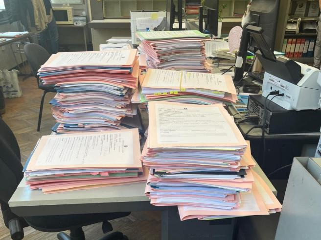
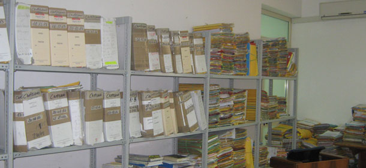
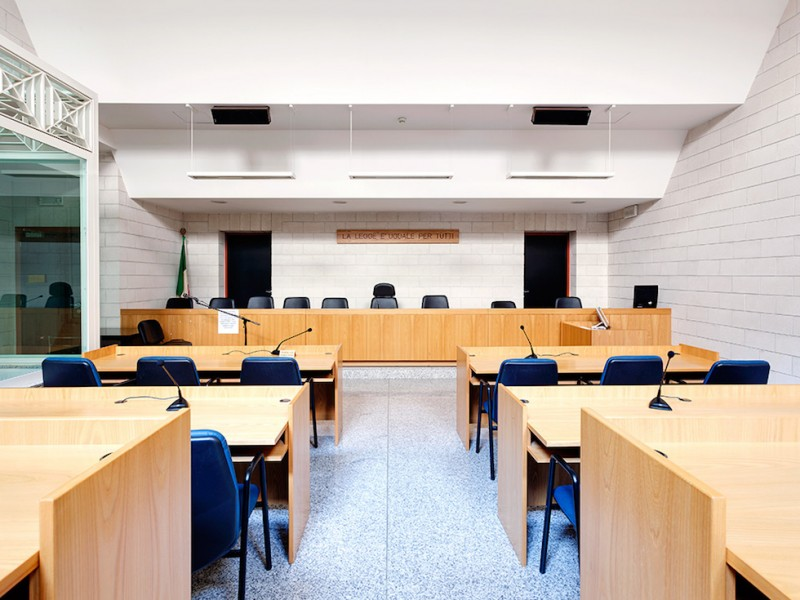
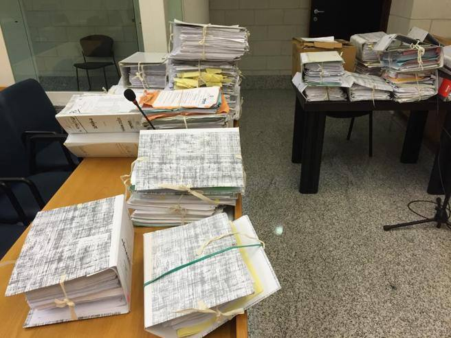

[ REPORT PCTO ]
IMMERSIONE NEL
SISTEMA GIURIDICO
Studente
Lorenzo Marcassoli
Ente Ospitante
Tribunale di Bergamo (Luglio 2025)
Istituto
Edoardo Amaldi
Studente
Lorenzo Marcassoli
Ente Ospitante
Tribunale di Bergamo (Luglio 2025)
Istituto
Edoardo Amaldi

Un'esperienza civile sul campo per decodificare i meccanismi della giustizia e la tutela reale dei cittadini fragili.



Riordino metodico delle pratiche e gestione dei documenti sensibili di cancelleria. Massima accuratezza procedurale.
Accoglienza utenti allo sportello, gestione delle istanze, consegna decreti e pianificazione udienze con il Giudice.
Studio delle dinamiche di cooperazione tra la difesa del cittadino e la fase di validazione del magistrato.
"Dietro ogni faldone c'è una vita. Lo sportello mostra il peso reale delle decisioni giuridiche sul destino delle persone."
Presenza in aula: Ho assistito a un processo in Corte d'Assise incentrato su un grave caso di maltrattamenti domestici.
La lezione: Uno sguardo crudo sulla responsabilità decisionale dei giudici e sul valore assoluto dei diritti umani.



Ambiente collaborativo e inclusivo. Inserimento immediato in una macchina organizzativa complessa.
Una guida costante, rassicurante e stimolante. Il vero pilastro di questa crescita formativa.
"Un'esperienza altamente arricchente che ha ampliato i miei orizzonti civili, consolidando abilità e consapevolezze fondamentali per il mio domani."